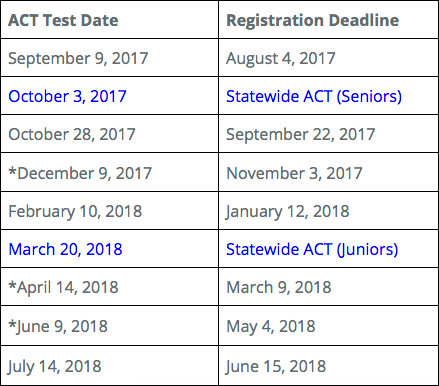

About
Sed eu congue arcu. Cras ac lectus elit. Quisque sit amet sem aliquam, dignissim mauris non, convallis enim. Morbi lacus elit, blandit in libero vitae, luctus placerat ipsum. Nunc blandit consequat ullamcorper. Suspendisse vehicula leo sed odio feugiat, sit amet consectetur urna mollis. Fusce vestibulum lacus vel quam mollis euismod. Nam condimentum purus mauris, at efficitur sem aliquam eu. Suspendisse a placerat nisi. In a lacinia augue, ut vestibulum enim. Morbi scelerisque, felis sit amet finibus congue, diam nisl posuere orci, sit amet lobortis ipsum sapien rhoncus nunc. Integer vel neque ut nisl ultrices hendrerit in ac mauris.
Staff Info
Frankie

I am so excited to "B" here! My name is Frankie Wade. My undergraduate degree is a Bachelor of Science in Education with a minor in English, and my Master's is also in Education with an endorsement in Library Science. This is my second year at Bartlett High, and I love my job! I'm so thrilled to have the opportunity to work with high school students and teachers. Plus, I have the added pleasure of working with a great co-librarian, Mrs. Sherry Simmons.
Sherry

Mrs. Simmons has spent the last 38 years working with high school students in many areas of the curriculum. She looks forward to meeting students and helping them with research, reading, and ACT review. Check out the link for ACT workshops available this year.
ACT Help
ACT Testing Schedule(2017-2018)
Have you ever wondered what information you need to know in order to earn a higher score on the ACT? Check out the ACT Standards for English, Mathematics, Reading, & Science located on the right side of this page.
Mrs. Simmons has spent the last 38 years working with high school students in many areas of the curriculum. She looks forward to meeting students and helping them with research, reading, and ACT review. Check out the link for ACT workshops available this year.